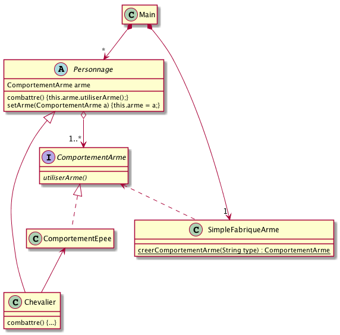
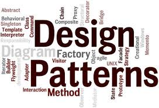

|
|
Version corrigée
Cette version comporte des indications pour les réponses aux exercices. |
PreReq |
1. Je sais programmer en Java. 2. J’ai conscience qu’il faut réfléchir avant de se lancer dans le codage. 3. Je maîtrise les concepts objet de base (héritage, polymorphisme, …). 4. J’ai compris ce qu’est un patron et j’ai grand soif d’en apprendre d’autres que Strategy et Singleton |
ObjTD |
Aborder le patron fabrique. |
Durée |
1 TD et 2 TP de 1,5h (sur 2 semaines). |
1. Rappel du cours
|
|
N’hésitez pas à (re)lire régulièrement le Support de Cours. |
2. Problème du main de test du jeu d’aventure
Vous avez sûrement dans votre main du code de jeu une partie du code
du style :
if (choix == "Epee") {
perso.setArme(new ComportementEpee());
}
else if (choix == "Arc") {
perso.setArme(new ComportementArc());
else if ...
...
}Ce code est peu adaptatif et va soufrir des évolutions, par exemple :
-
changement de la liste des armes possibles
-
rajouter des
if then elseà chaque nouvelle arme
|
|
QUESTION
|
|
|
Solution

|
Vous complèterez le code du jeu d’aventure en TP. Mais avant cela étudions le patron Factory sur une exemple complet.
3. La pizzeria O’Reilly
Vous êtes embauché dans une pizzeria pour faire … de l’informatique!
Soit le code de départ suivant :
/**
* @author bruel taken from O'Reilly Head First Design Patterns
*
*/
public class Pizzeria {
public Pizza commanderPizza(String type) {
Pizza pizza = null;
if (type.equals("fromage")) {
pizza = new PizzaFromage();
} else if (type.equals("grecque")) {
pizza = new PizzaFromage();
} else if (type.equals("poivrons")) {
pizza = new PizzaPoivrons();
}
pizza.preparer();
pizza.cuire();
pizza.couper();
pizza.emballer();
return pizza;
}
}|
|
QUESTION
|
4. Le patron Fabrique
|  |
Design pattern : Fabrique
Fabrique (simple) définit une interface pour la création d’un objet, mais en laissant à des sous-classes le choix des classes à instancier (voir aussi Fabrique abstraite). 
Figure 1. Modèle UML du patron Fabrique
|
{kind=link}
Pour aller plus loin
|
|
QUESTION
|
About…
Document réalisé par Dut/Info-S3/M3105 via Asciidoctor (version 1.5.1) de 'Dan Allen', lui même basé sur AsciiDoc.
Pour l’instant ce document est libre d’utilisation et géré par la 'Licence Creative Commons'.
 licence Creative Commons Paternité - Partage à l'Identique 3.0 non transposé.
licence Creative Commons Paternité - Partage à l'Identique 3.0 non transposé.